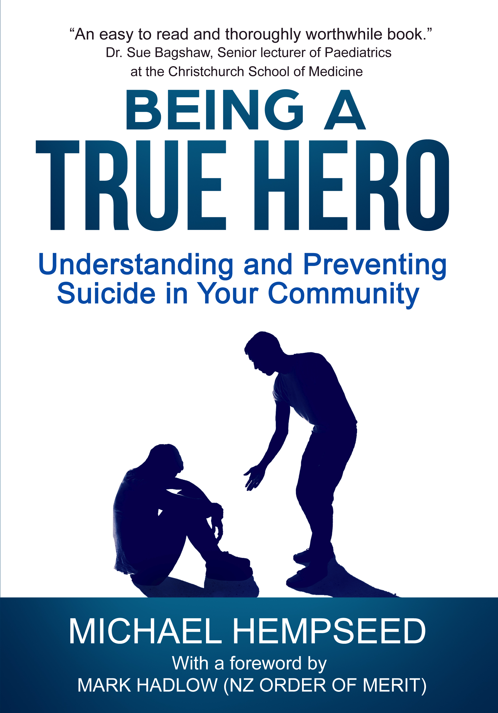
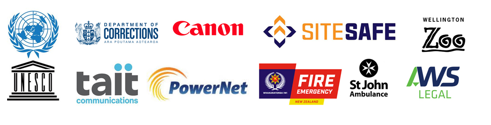

This is the website of Michael Hempseed.
- Michael is the author of the book "Being a True Hero: Understanding & Preventing Suicide in Your Community". The website for the book is www.beingatruehero.com. The book is being used by the New Zealand Police, Fire and Emergency New Zealand, GPs, Counsellors as well as many parents and teachers.
- Michael speaks to thousands of people every year. On average he delivers two to three seminars per week. On really busy weeks he can deliver up to nine seminars. He has spoken at TedX Darwin.
- Testimonials
- "Department of Corrections staff highly valued Michael's entertaining and thought provoking session focusing on stress, sleep and overcoming a fear of failure. His content was fresh and tailored to our unique environment. The research provided new found knowledge and unexpected discoveries leaving staff feeling informed and invigorated."
- - Elaine Colhoun, Principal Case Manager/Advisor Rehabilitation & Learning
- "Michael holds a wealth of knowledge in the space of mental health, suicide and young people. He delivers that information in way that leaves the receiver feeling empowered to use that information within both their work and personal lives. Michael's sensitivity to difficult topics such as suicide is apparent and perfectly presented."
- - Amy Walters, Manawatu District Council Youth Focus Group
- "Michael is a passionate and engaging facilitator with a strong mental health research background who offers many helpful insights and a hopeful message."
- - Anna Chirnside, Canterbury Youth Workers Collective
- Michael has spoken to hundreds of clients and groups in the last few years including...
-
-
